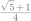
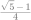

시험대비 · 2026학년도 2학기 중간고사 · 중3 · 삼각비
이름
001
기원전 3세기경 아리스타르코스는 반달이 뜬 날 지구, 달, 태양 사이의 거리를 구하기 위하여 그림과 같이 지구에서 달과 태양을 바라본 각의 크기와 달에서 지구와 태양을 바라본 각의 크기를 측정하였다. 두 각의 크기가 각각 ,  이고 지구와 태양 사이의 거리가 지구와 달 사이의 거리의 배일 때, 주어진 삼각비의 표를 이용하여
이고 지구와 태양 사이의 거리가 지구와 달 사이의 거리의 배일 때, 주어진 삼각비의 표를 이용하여  의 값을 소수점 아래 첫째 자리에서 반올림하여 구하시오.
의 값을 소수점 아래 첫째 자리에서 반올림하여 구하시오.
| 각도 | |  |  |
|---|
| 0.0175 | 0.9998 | 0.0175 |
| 0.0349 | 0.9994 | 0.0349 |
| 0.0523 | 0.9986 | 0.0524 |
시험대비 · 2026학년도 2학기 중간고사 · 중3 · 삼각비
004
그림과 같이 좌표평면 위의 세 점  , , 에 대하여 라 할 때, 의 값은? (단, 는 원점이다.)
, , 에 대하여 라 할 때, 의 값은? (단, 는 원점이다.)

시험대비 · 2026학년도 2학기 중간고사 · 중3 · 삼각비
005
그림과 같이 , 인 직각삼각형 의 변  위의 세 점
위의 세 점  ,
,  ,
,  에 대하여 이다. , 라 할 때, 의 값을 구하시오.
에 대하여 이다. , 라 할 때, 의 값을 구하시오.
006
그림과 같이 한 변의 길이가 2인 정사각형 의 꼭짓점 를 중심으로 하고 선분  를 반지름으로 하는 사분원이 있다. 이 정사각형의 두 변 ,
를 반지름으로 하는 사분원이 있다. 이 정사각형의 두 변 ,  와 이 사분원의 호
와 이 사분원의 호  에 접하는 원
에 접하는 원  의 반지름의 길이를 구하시오.
의 반지름의 길이를 구하시오.
시험대비 · 2026학년도 2학기 중간고사 · 중3 · 삼각비
008
인 두 각  , 에 대하여 가 이차방정식 의 한 근일 때, 을 간단히 한 것은?
, 에 대하여 가 이차방정식 의 한 근일 때, 을 간단히 한 것은?
시험대비 · 2026학년도 2학기 중간고사 · 중3 · 삼각비
009
그림과 같이 도로의 수평 거리에 대한 수직 거리의 비율을 나타낸 도로 표지판이 있다. 이 도로가 수평면에 대하여 기울어진 각의 크기를 주어진 삼각비의 표를 이용하여 구하시오.
| 각도 |  |  |  |
|---|
| 0.06 | 0.99 | 0.06 |
| 0.10 | 0.99 | 0.10 |
| 0.13 | 0.99 | 0.14 |
| 0.17 | 0.98 | 0.17 |
| 0.20 | 0.97 | 0.21 |
010
그림과 같이 삼각형 의 꼭짓점 에서 변  의 연장선에 내린 수선의 발을
의 연장선에 내린 수선의 발을  라 하자. , , m일 때, 선분 의 길이를 주어진 삼각비의 표를 이용하여 소수점 아래 첫째 자리에서 반올림하여 구하시오.
라 하자. , , m일 때, 선분 의 길이를 주어진 삼각비의 표를 이용하여 소수점 아래 첫째 자리에서 반올림하여 구하시오.
| 각도 |  | | |
|---|
| 0.4695 | 0.8829 | 0.5317 |
| 0.6691 | 0.7431 | 0.9004 |
| 0.7431 | 0.6691 | 1.1106 |
| 0.8829 | 0.4695 | 1.8807 |
시험대비 · 2026학년도 2학기 중간고사 · 중3 · 삼각비
시험대비 · 2026학년도 2학기 중간고사 · 중3 · 삼각비
013
그림과 같이 모든 모서리의 길이가 1인 정사각뿔 - 에서 모서리 위를 움직이는 점
에서 모서리 위를 움직이는 점  에 대하여 라 하자. 의 최댓값을 , 최솟값을
에 대하여 라 하자. 의 최댓값을 , 최솟값을  이라 할 때, 의 값을 구하시오.
이라 할 때, 의 값을 구하시오.
014
그림과 같이 길이가 1cm인 선분  이 있다. 점 에서 선분
이 있다. 점 에서 선분  에 수직이고 길이가 1cm인 선분 를 그려 직각삼각형 를 만들고, 점 에서 선분 에 수직이고 길이가 1cm인 선분 을 그려 직각삼각형 을 만든다. 이와 같은 과정을 계속하여 번째로 만든 직각삼각형 에서 라 할 때, 의 값을 구하시오.
에 수직이고 길이가 1cm인 선분 를 그려 직각삼각형 를 만들고, 점 에서 선분 에 수직이고 길이가 1cm인 선분 을 그려 직각삼각형 을 만든다. 이와 같은 과정을 계속하여 번째로 만든 직각삼각형 에서 라 할 때, 의 값을 구하시오.
시험대비 · 2026학년도 2학기 중간고사 · 중3 · 삼각비
시험대비 · 2026학년도 2학기 중간고사 · 중3 · 삼각비
018
그림과 같이 , 인 사각형  에서 일 때, 선분
에서 일 때, 선분  의 길이는?
의 길이는?

시험대비 · 2026학년도 2학기 중간고사 · 중3 · 삼각비
019
그림과 같이 , , 인 직각삼각형  의 빗변 위를 움직이는 점 에 대하여 의 최솟값을 구하시오.
의 빗변 위를 움직이는 점 에 대하여 의 최솟값을 구하시오.
020
그림과 같이 , 인 이등변삼각형  에서 밑변
에서 밑변  를 삼등분하는 두 점 중 점
를 삼등분하는 두 점 중 점  에 가까운 점을
에 가까운 점을  라 할 때, 선분 의 길이를 구하시오.
라 할 때, 선분 의 길이를 구하시오.
시험대비 · 2026학년도 2학기 중간고사 · 중3 · 삼각비
시험대비 · 2026학년도 2학기 중간고사 · 중3 · 삼각비
023
그림과 같이 중심이  이고 반지름의 길이가 12인 원의 두 지름
이고 반지름의 길이가 12인 원의 두 지름  , 가 서로 수직이다. 선분 위의 점
, 가 서로 수직이다. 선분 위의 점  에 대하여 이고, 직선 가 원과 만나는 점 중 점 가 아닌 점을
에 대하여 이고, 직선 가 원과 만나는 점 중 점 가 아닌 점을  라 할 때, 선분 의 길이는?
라 할 때, 선분 의 길이는?
024
그림과 같이 , , 인 삼각형  가 있다. , 가 되도록 변
가 있다. , 가 되도록 변  위에 점
위에 점  를 잡을 때, 의 값은?
를 잡을 때, 의 값은?

시험대비 · 2026학년도 2학기 중간고사 · 중3 · 삼각비
시험대비 · 2026학년도 2학기 중간고사 · 중3 · 삼각비
시험대비 · 2026학년도 2학기 중간고사 · 중3 · 삼각비
030
그림과 같이 한 변의 길이가 10cm인 정사각형  를 점
를 점  를 중심으로 시계 반대 방향으로 만큼 회전시킨 정사각형을 이라 하자. 두 정사각형이 겹치는 부분의 넓이를 구하시오. (단, 로 계산한다.)
를 중심으로 시계 반대 방향으로 만큼 회전시킨 정사각형을 이라 하자. 두 정사각형이 겹치는 부분의 넓이를 구하시오. (단, 로 계산한다.)
시험대비 · 2026학년도 2학기 중간고사 · 중3 · 삼각비
시험대비 · 2026학년도 2학기 중간고사 · 중3 · 삼각비
004
그림과 같이 좌표평면 위의 세 점 , , 에 대하여 라 할 때, 의 값은? (단, 는 원점이다.)
시험대비 · 2026학년도 2학기 중간고사 · 중3 · 삼각비
시험대비 · 2026학년도 2학기 중간고사 · 중3 · 삼각비
008
인 두 각 , 에 대하여 가 이차방정식 의 한 근일 때, 을 간단히 한 것은?
시험대비 · 2026학년도 2학기 중간고사 · 중3 · 삼각비
009
그림과 같이 도로의 수평 거리에 대한 수직 거리의 비율을 나타낸 도로 표지판이 있다. 이 도로가 수평면에 대하여 기울어진 각의 크기를 주어진 삼각비의 표를 이용하여 구하시오.
| 각도 | | | |
|---|
| 0.06 | 0.99 | 0.06 |
| 0.10 | 0.99 | 0.10 |
| 0.13 | 0.99 | 0.14 |
| 0.17 | 0.98 | 0.17 |
| 0.20 | 0.97 | 0.21 |
010
그림과 같이 삼각형 의 꼭짓점 에서 변 의 연장선에 내린 수선의 발을 라 하자. , , m일 때, 선분 의 길이를 주어진 삼각비의 표를 이용하여 소수점 아래 첫째 자리에서 반올림하여 구하시오.
| 각도 | | | |
|---|
| 0.4695 | 0.8829 | 0.5317 |
| 0.6691 | 0.7431 | 0.9004 |
| 0.7431 | 0.6691 | 1.1106 |
| 0.8829 | 0.4695 | 1.8807 |
시험대비 · 2026학년도 2학기 중간고사 · 중3 · 삼각비
011
그림과 같이 , , 인 이등변삼각형  에서 각
에서 각  의 이등분선이 변
의 이등분선이 변  와 만나는 점을
와 만나는 점을  라 하자. 다음 물음에 답하시오.
라 하자. 다음 물음에 답하시오.
- 선분
 의 길이를 구하시오.
의 길이를 구하시오.
- 의 값을 구하시오.
- 의 값을 구하시오.
정답: (1) (2) 
(3) 
시험대비 · 2026학년도 2학기 중간고사 · 중3 · 삼각비
013
그림과 같이 모든 모서리의 길이가 1인 정사각뿔 -에서 모서리 위를 움직이는 점 에 대하여 라 하자. 의 최댓값을 , 최솟값을 이라 할 때, 의 값을 구하시오.
014
그림과 같이 길이가 1cm인 선분 이 있다. 점 에서 선분 에 수직이고 길이가 1cm인 선분 를 그려 직각삼각형 를 만들고, 점 에서 선분 에 수직이고 길이가 1cm인 선분 을 그려 직각삼각형 을 만든다. 이와 같은 과정을 계속하여 번째로 만든 직각삼각형 에서 라 할 때, 의 값을 구하시오.
시험대비 · 2026학년도 2학기 중간고사 · 중3 · 삼각비
시험대비 · 2026학년도 2학기 중간고사 · 중3 · 삼각비
018
그림과 같이 , 인 사각형 에서 일 때, 선분 의 길이는?
시험대비 · 2026학년도 2학기 중간고사 · 중3 · 삼각비
019
그림과 같이 , , 인 직각삼각형 의 빗변 위를 움직이는 점 에 대하여 의 최솟값을 구하시오.
시험대비 · 2026학년도 2학기 중간고사 · 중3 · 삼각비
시험대비 · 2026학년도 2학기 중간고사 · 중3 · 삼각비
시험대비 · 2026학년도 2학기 중간고사 · 중3 · 삼각비
시험대비 · 2026학년도 2학기 중간고사 · 중3 · 삼각비
시험대비 · 2026학년도 2학기 중간고사 · 중3 · 삼각비
030
그림과 같이 한 변의 길이가 10cm인 정사각형 를 점 를 중심으로 시계 반대 방향으로 만큼 회전시킨 정사각형을 이라 하자. 두 정사각형이 겹치는 부분의 넓이를 구하시오. (단, 로 계산한다.)
 cm인 직사각형 모양의 종이를 두 변
cm인 직사각형 모양의 종이를 두 변  ,
,  위의 두 점 ,
위의 두 점 ,  를 잇는 선분 를 접는 선으로 하여 점
를 잇는 선분 를 접는 선으로 하여 점  가 점
가 점  에 오도록 접었다. 점
에 오도록 접었다. 점  가 옮겨진 점을
가 옮겨진 점을  , 라 할 때, 의 값은?
, 라 할 때, 의 값은? 인
인 에서
에서
 는
는 의
의
 ,
, 이
이 에
에 은
은 에도
에도 ,
, 이
이 와
와 ,
, 라
라 의
의 는
는 의
의 에서
에서 에
에 ,
, ,
, 라
라 의
의 의
의
 와
와
 에
에 의
의 ,
, 인
인 의
의
 와
와
 에
에 이다.
이다. 일
일 를
를 에
에 라
라 ,
,

 의
의 ,
, 의
의 ,
, 라
라
 에서
에서 의
의 ,
, 의
의 라
라 의
의
 와
와
 에
에 의
의 ,
, ,
, 에
에 라
라 에서
에서 를
를 에서
에서 ,
, 의
의 ,
, 라
라 ,
, 와
와 라
라 ,
, 인
인 에서
에서 의
의 와
와 라
라 의
의 ,
, 를
를 를
를 에
에 가
가 ,
, 의
의